pkg), groovyExec.jar embarqué.
clone / push smart-HTTP.sha256, chunkés, auto-décompressés.package.json racine — orchestrator-webpanel (server + client) et orchestrator-worker sont des projets npm indépendants.ICollection — même sémantique sur NeDB et MongoDB, choisie selon MONGO_URI.nodes + edges. parseFlowContent construit les cartes d'arêtes et identifie les racines (nœuds sans arête entrante).goto / condition.DEFAULT_FLOW_TIMEOUT_MS).REMOTE_TYPES — powershell batch python groovy jsbackend shell bash — partent au worker assigné (Playwright tourne dans un nœud jsbackend). Le JavaScript inline tourne en cours de processus.
flowRef)flow charge un autre flux par ID et l'exécute inline, avec son propre enregistrement d'exécution (triggered - <parent>). Il tourne sous son propre worker assigné, sinon celui du parent.${{ secrets.NAME }} sont résolus côté serveur juste avant l'exécution — jamais écrits dans les logs.input + variables, streame stdout/stderr, et capture les sorties via des fichiers temporaires. Serveur et worker partagent la même logique de runners.| Type de nœud | Runtime | Notes |
|---|---|---|
| javascript | Node.js (in-process) | Inline, non sandboxé — rapide, pas de spawn. |
| jsbackend | Node.js (child) | Module ESM ; input/output + variables nommées. Timeout JS_BACKEND_TIMEOUT_MS. |
| python | python sur $PATH | Variables round-trippées en JSON via fichiers temp. |
| groovy | java -jar groovyExec.jar | Java 11+ requis ; JsonSlurper / JsonOutput. |
| powershell | powershell.exe / pwsh | Variables via ConvertFrom-Json ; sortie via $env:OUTPUT. |
| batch | cmd.exe (Windows) | Variables exportées en %VAR% ; pas de capture retour. |
| shell / bash | bash | Linux/Mac seulement ; variables + INPUT/OUTPUT en env. Playwright (bundlé) s'utilise dans les nœuds JS, pas un type à part. |
| flow / variable / comment / goto | — | Orchestration / valeur de variable / pass-through. |
WORKER_LONG_POLL_MS) ; une nouvelle répartition réveille l'attente immédiatement.DISPATCH_TIMEOUT_MIN (5 min).WORKER_OFFLINE_TIMEOUT_MS (60 s).
GET /executions/:id/stream). EventSource ne pose pas d'en-têtes → JWT accepté en ?token=. Les workers poussent leurs lignes vers /jobs/:id/log, redistribuées aux abonnés..git sur disque : objets et refs sont des documents en base (git_objects, git_refs), scopés par flux. Un flux JSON est projeté dans une arborescence lisible — et relue sans perte.relations.json mappe chaque id de nœud → chemin exact, donc le round-trip survit aux collisions. Les fichiers ajoutés au clone (.gitignore, README…) sont reportés, pas écrasés.Save by ). Jamais un commit venu d'un push, d'un checkpoint manuel, d'une restauration ou d'un import.activeBranch (défaut main). L'exécuteur lance toujours le HEAD de la branche active, matérialisé dans le document.| Action | Effet |
|---|---|
| create | Nouvelle branche depuis le HEAD courant ou un commit/branche from. |
| checkout | Bascule la branche active + re-matérialise son HEAD dans le doc. |
| reset · head | reset --hard : jette les descendants. |
| reset · root | Fait du commit la nouvelle racine : jette les ancêtres. |
/git/:flowId. Un client git ordinaire peut clone / pull / push. Implémentation smart-HTTP maison (report-status, thin-packs, upload-pack).application/x-git-*).artifact_blobs, et un nouveau commit devient le HEAD de la branche.artifacts/ en bytes réels — ouvrables directement (même uploadés via l'UI). Anciens commits : pointeur git-LFS, encore lu.variants[] : la même définition exécutée avec un worker et/ou une branche différents — lançable et planifiable indépendamment.POST /flows/:id/execute accepte des overrides { workerId, branch }. workerId: "" force l'exécution locale. L'accès au worker effectif est contrôlé (403 si interdit).variantId + workerId + branch. Le cronScheduler évite les « ghost runs » des variantes supprimées.dev) et prod-worker (branche main), chacun sur son propre cron.sha256 ; le flux et les jobs ne gardent qu'une ref { name, sha }.artifact_blobs par sha256. Dédup entre nœuds et entre runs. Bytes en BinData (Mongo) / base64 (NeDB).artifact_chunks (contourne le plafond BSON de 16 Mo). Download streamé, jamais tout en mémoire.EXECUTION_DIR. Worker : télécharge chaque corps par sha avant de lancer le nœud.tar (repli 7z), puis supprimée. Garder via KEEP_ARTIFACTS.POST /flows/:id/artifacts, limite ARTIFACT_UPLOAD_LIMIT 1 Go) — évite l'inflation base64. Download streamé /:sha/raw ou base64 /:sha.safeArtifactPath rejette chemins absolus, .., noms vides. Le janitor réclame les blobs non référencés (par job, flow, ou artefact committé dans git) hors fenêtre ARTIFACT_GC_MIN_AGE_MS.POST /flows/:id/execute. Admin / operator. Overrides de variante possibles.cronScheduler charge les lignes type=cron et enregistre des jobs node-cron.eventBus surveille <WORK_DIR>/inbox → file.arrived. Aussi flow.completed / flow.failed.GET /trigger/:token non authentifié. Tokens à expiration auto (balayés chaque minute).variantId + workerId + branch, et lance le flux avec cet override worker/branche.Bearer <jwt> — émis par /auth/login (8 h) + /auth/refresh (7 j). Accepté en ?token= pour SSE/downloads.ApiKey <rawkey> — par utilisateur, stockée hashée SHA-256./workers/register protégé par WORKER_REGISTRATION_SECRET ; renvoie un token bearer propre au worker, exigé partout ailleurs (comparé en temps constant).requireRole(...) protège les routes. Suppression d'exécutions : admin = toutes ; operator = les siennes.
access = { mode, roles[], users[] } :execute.
PROXYAUTH_URL + PROXYAUTH_REGEX sont définis, le login SSO est activé. Toute route atteinte sans session redirige le navigateur vers PROXYAUTH_LOGIN_URL pour obtenir un ticket, puis l'échange./authProxy valide le ticket externe (construit service=<DOMAIN>:<PORT>), extrait le login via la regex (groupe 1), et émet des tokens. Le formulaire mot de passe reste à #/login (échappatoire, sans redirection auto).passwordHash est SSO-only : login mot de passe refusé, connexion par ticket uniquement.oauth_proxy/ : un fournisseur OAuth2 (Authorization Code) de test qui ponte Grafana → CAS. Endpoints /authorize, /token, /userinfo, discovery OIDC. Délègue l'auth à authent_test_service./api/v1) ou par git. Forme d'erreur standard : { error: { code, message } }.BAD_REQUEST 400 · UNAUTHORIZED 401 · FORBIDDEN 403 · NOT_FOUND 404 · CONFLICT 409 · NOT_CONFIGURED 503.ICollection. MONGO_URI défini → MongoDB ; sinon NeDB fichier sous <WORK_DIR>/data/. Même sémantique de requêtes.apiKeys.keyHash, login (unique), workers.lastSeenAt, worker_jobs.status, executions.flowId+status+startTime, objets/refs git par flowId…JANITOR_INTERVAL_MS, 5 min) garde la base propre sans intervention.worker_jobs terminés au-delà de WORKER_JOB_RETENTION_MS (1 h).ARTIFACT_GC_MIN_AGE_MS (10 min) ne sont jamais réclamés — le GC ne peut pas courir contre un upload en cours (chunks écrits avant leur manifeste).flow.schedule → schedules, artefacts inline → CAS, backfill owner=admin, et réconciliation des executions restées RUNNING → FAILED.DELETE /executions (admin) périodiquement.groovyExec.jar embarqué et extrait au 1er lancement. Migrations de boot idempotentes.NODE_ENV=production, le serveur refuse de démarrer si l'un de ces secrets est resté sur sa valeur par défaut :| JWT_SECRET | signe tokens session + refresh |
| ORCHESTRATOR_MASTER_KEY | clé AES — ne jamais changer après des secrets |
| WORKER_REGISTRATION_SECRET | même valeur sur chaque worker |
| ADMIN_PASSWORD | au 1er boot, création de l'admin |
HTTPS=true + cert/clé (défaut <WORK_DIR>/certs/). Sauvegarde : copier data/ (NeDB) ou mongodump.| PORT | 3939 · port HTTP/HTTPS |
| MONGO_URI | défini → Mongo ; absent → NeDB |
| JSON_BODY_LIMIT | 100mb · taille corps JSON |
| ARTIFACT_UPLOAD_LIMIT | 1024mb · upload artefact brut |
| DISPATCH_TIMEOUT_MIN | 5 · timeout nœud worker |
| JANITOR_INTERVAL_MS | 300000 · balayage janitor |
| ARTIFACT_GC_MIN_AGE_MS | 600000 · fraîcheur GC |
| SERVER_EXECUTION_MODE | parallel | sequential |
| ..._SERVER_EXECUTION_ENABLED | false → tout sur workers |
| ..._FAIL_ON_LOG_ERROR | ERROR/FAILED dans logs → FAILED |
| ORCHESTRATOR_URL | scheme://host:port (sans /api/v1) |
| WORKER_NAME | nom affiché dans l'UI |
| WORKER_REGISTRATION_SECRET | doit matcher le serveur |
| WORKER_EXECUTION_MODE | parallel | sequential |
| WORKER_MAX_HTTP_SIZE | 100mb · ≥ JSON_BODY_LIMIT |
| POLL_INTERVAL_MS | 2000 · cadence de poll |
| ORCHESTRATOR_WORK_DIR | data/, inbox/, groovyExec.jar |
| ORCHESTRATOR_EXECUTION_DIR | cwd des process + artefacts |
| ORCHESTRATOR_KEEP_ARTIFACTS | true → garde après run |
release/server.env.example · release/worker.env.example.| Symptôme | Cause probable | Action |
|---|---|---|
Refus de démarrer · default/placeholder secrets | prod avec secret par défaut | Poser JWT_SECRET, MASTER_KEY, etc. |
| Worker absent de l'UI | URL / secret incohérent | Vérifier ORCHESTRATOR_URL + REGISTRATION_SECRET |
| Exécution « running » à l'infini | crash/redémarrage en plein run | Réconcilié au boot → FAILED ; sinon /kill |
| Job se fige puis échoue ~5 min | worker hors ligne en plein job | Reaper annule après OFFLINE_TIMEOUT |
request entity too large | artefact > limite | ↑ JSON_BODY_LIMIT + WORKER_MAX_HTTP_SIZE |
| Secrets illisibles | MASTER_KEY a changé | Restaurer la clé, ou ressaisir les secrets |
| Nœuds Groovy échouent | Java absent / jar introuvable | Java 11+ ; vérifier GROOVY_JAR |
[Startup] [DB] [Reaper] [Janitor] [EventBus].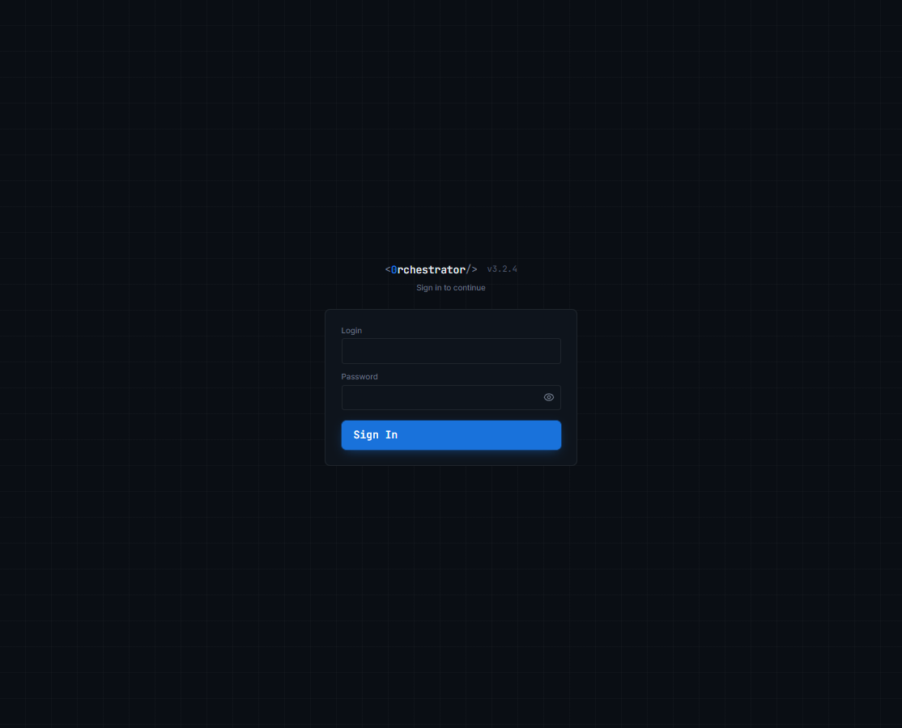
[Wot].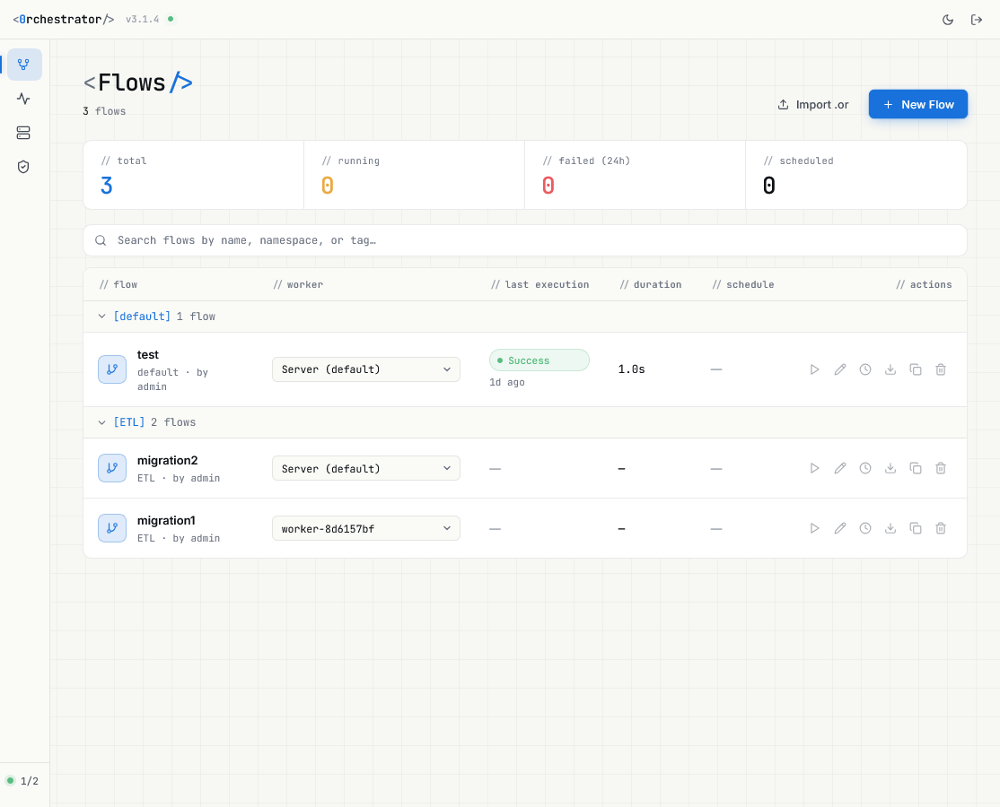
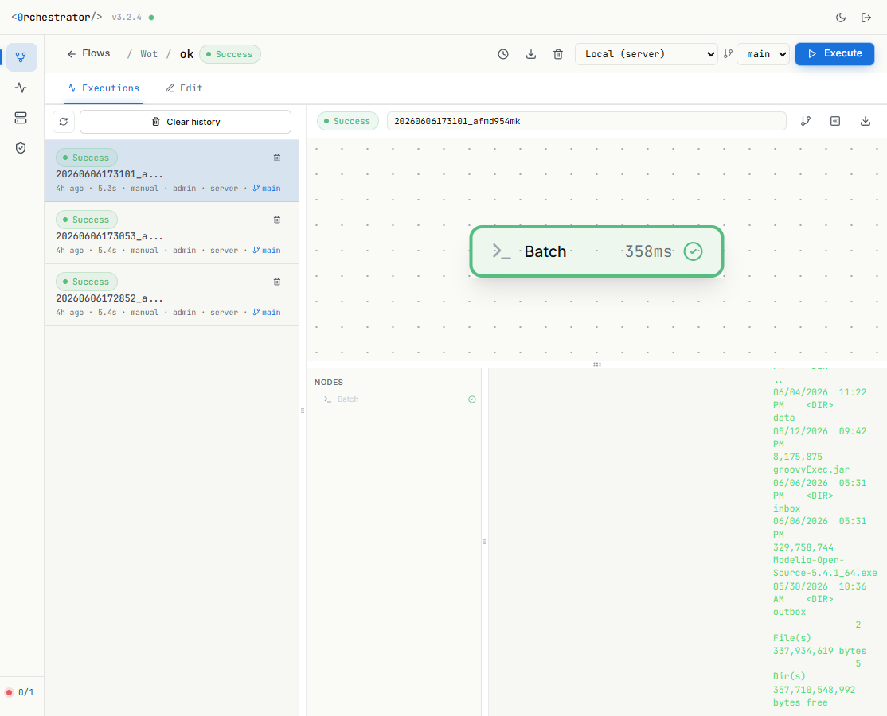
nodes/, batch.bat — la vue git du flux.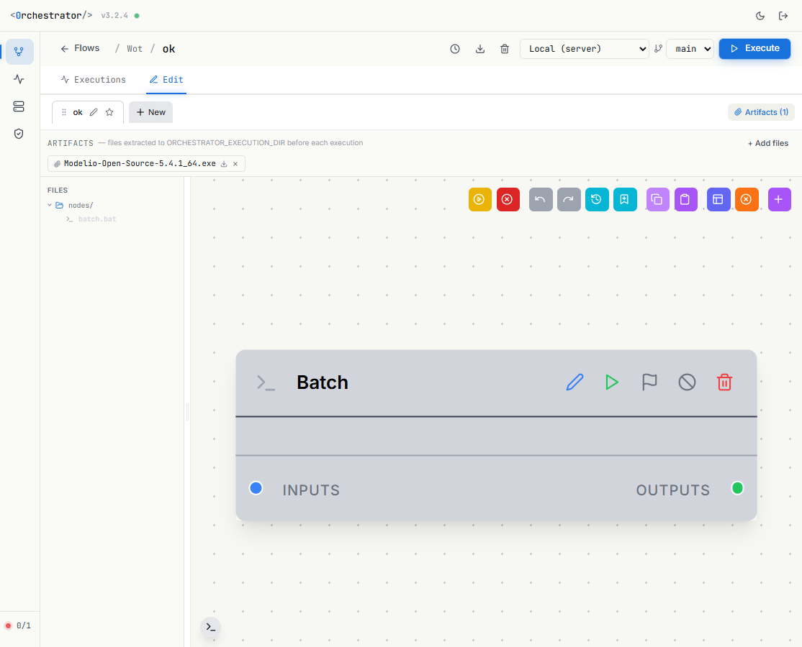
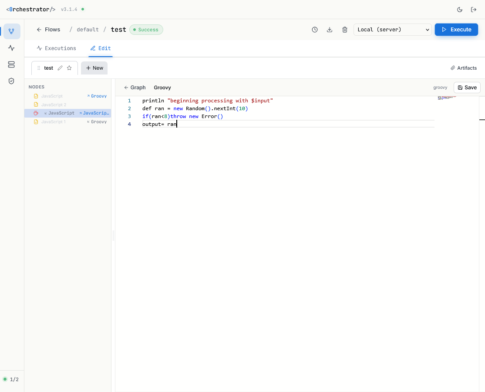
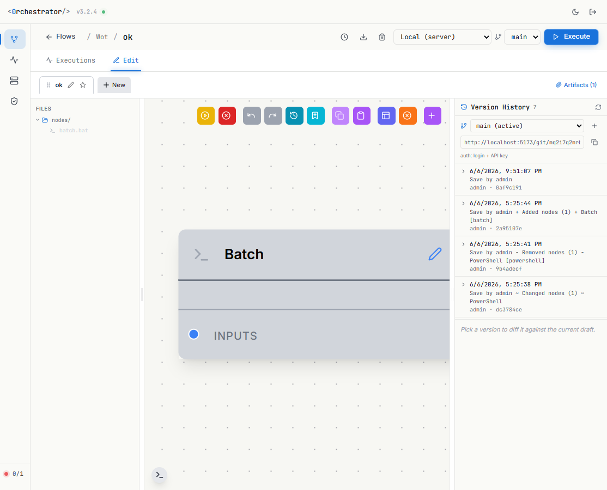
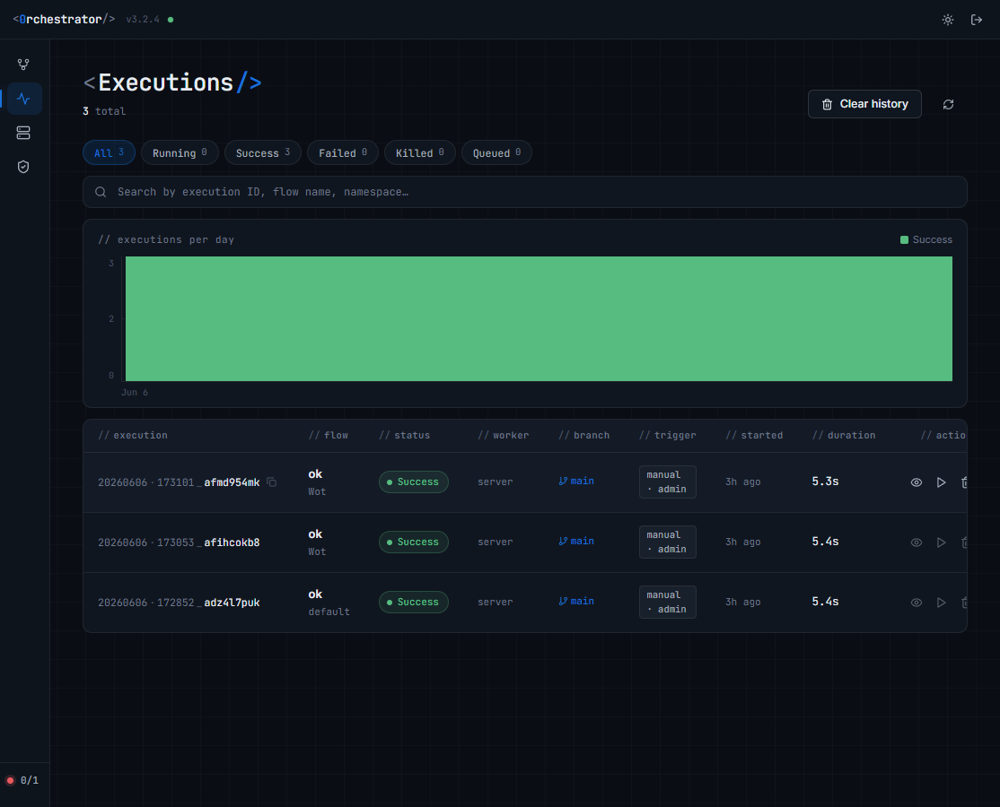
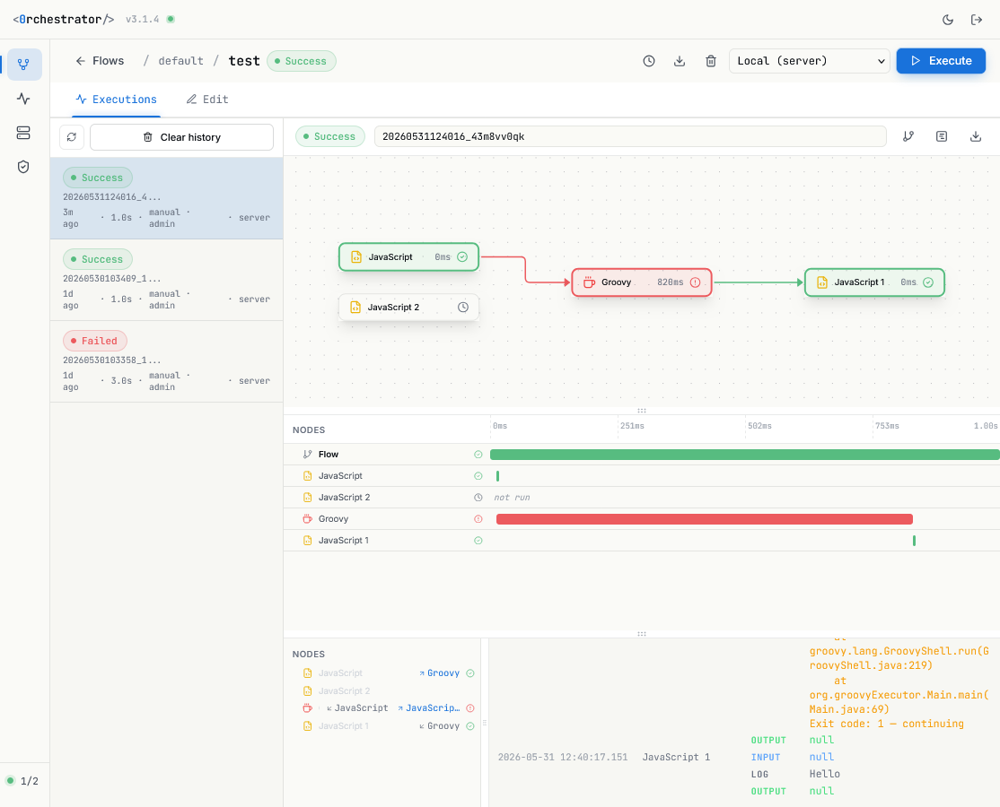
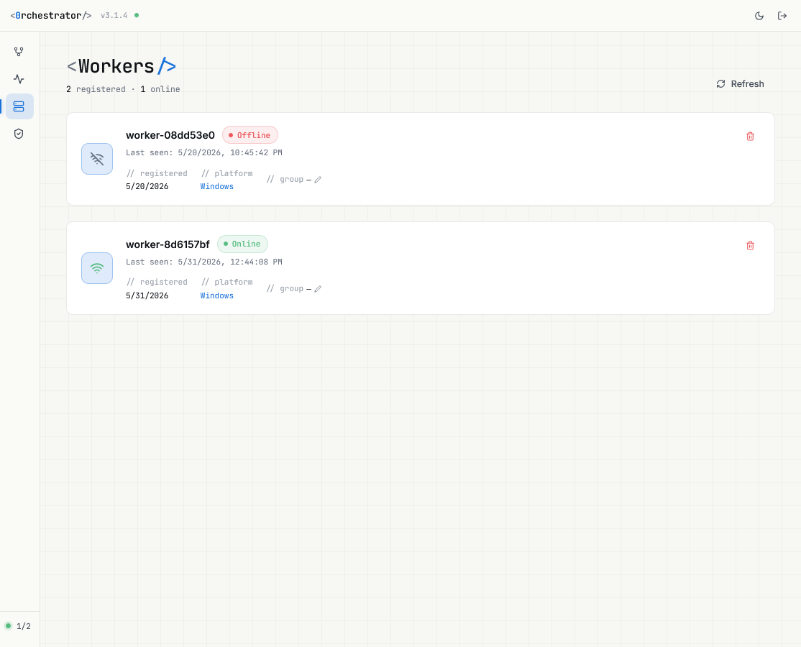
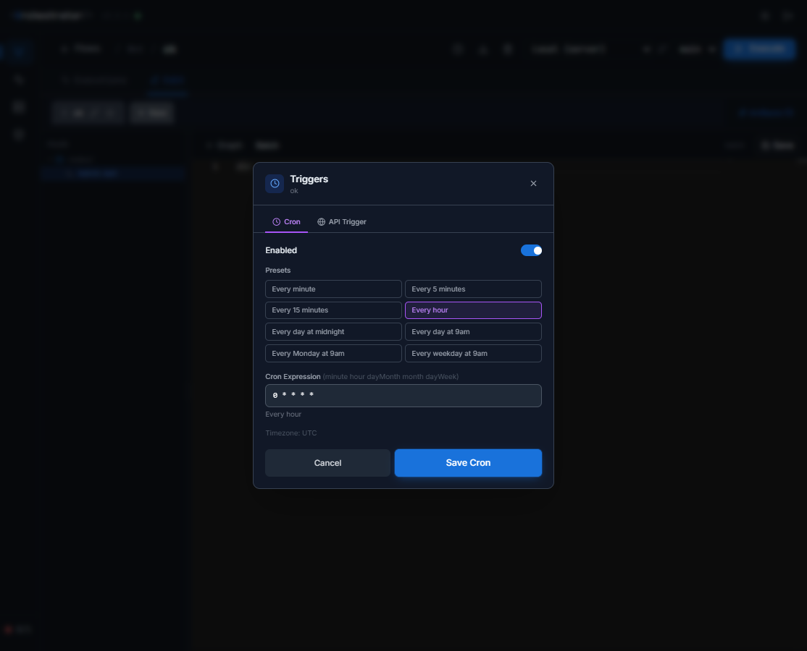
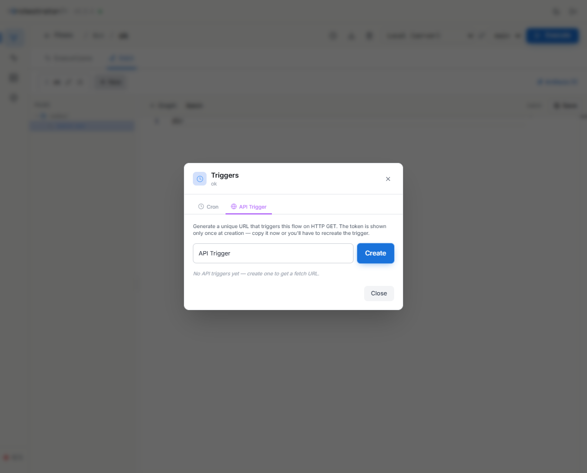
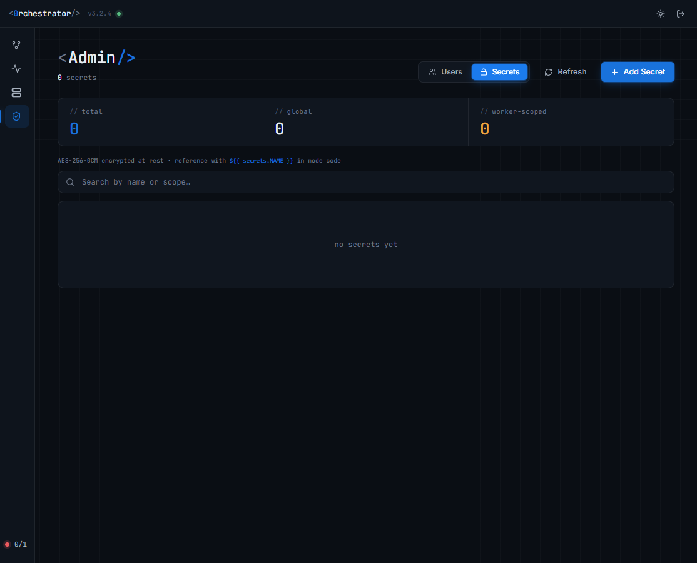
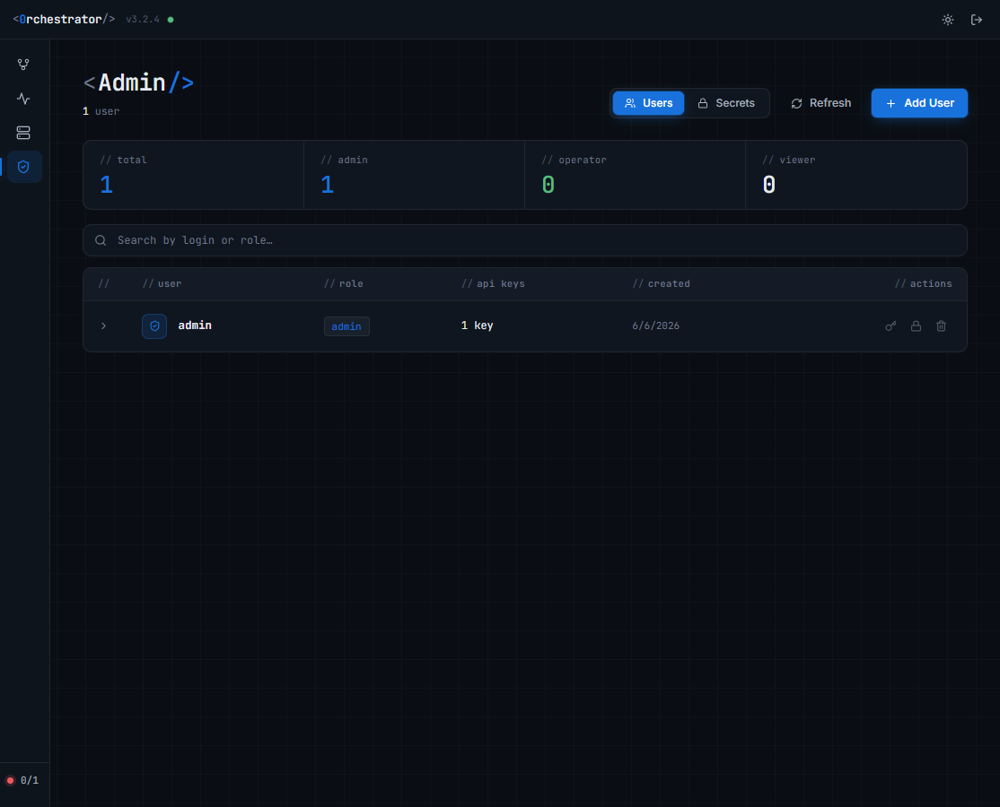